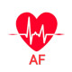

فییریلاسیون دهلیزی
در بیماران Unstable کاردیوورژن سینکرونایز با ۱۲۰-۲۰۰j
Amp Heparin 5000u stat then 1000u/h inf
Amp Diltiazem 20mg IV Over 2min
Or Amp Verapamil 5mg Over 2min if need after 15min 5mg Over 2min
ECG Features of Atrial Fibrillation
Irregularly irregular rhythm▪️
No P waves▪️
Absence of an isoelectric baseline▪️
Variable ventricular rate▪️
QRS complexes usually < 120ms, unless pre-existing bundle branch block, accessory pathway, or rate-related aberrant conduction▪️
Fibrillatory waves may be present and can be either fine (amplitude < 0.5mm) or coarse (amplitude > 0.5mm)▪️
Fibrillatory waves may mimic P waves leading to misdiagnosis▪️
Causes of Atrial Fibrillation
Ischaemic heart disease🔹
Hypertension🔹
Valvular heart disease 🔹
Acute infections🔹
Electrolyte disturbance 🔹
Thyrotoxicosis🔹
Drugs (e.g. sympathomimetics)🔹
Alcohol🔹
Pulmonary embolus🔹
Pericardial disease🔹
Acid-base disturbance🔹
Pre-excitation syndromes🔹
Cardiomyopathies🔹
Phaeochromocytoma🔹
Atrial flutter 1️⃣
Atrial tachycardia 2️⃣
Multifocal atrial tachycardia 3️⃣
Wolf-Parkinson-White syndrome 4️⃣
AVNRT 5️⃣